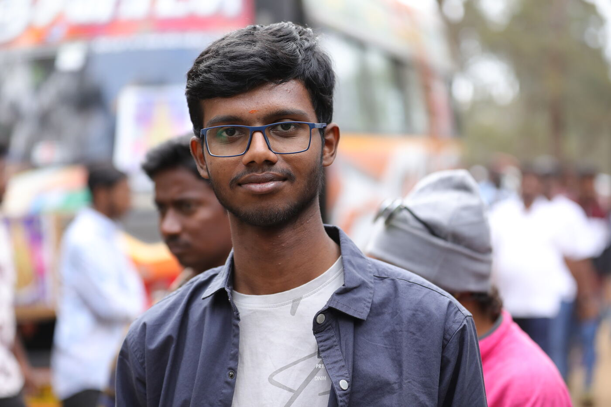
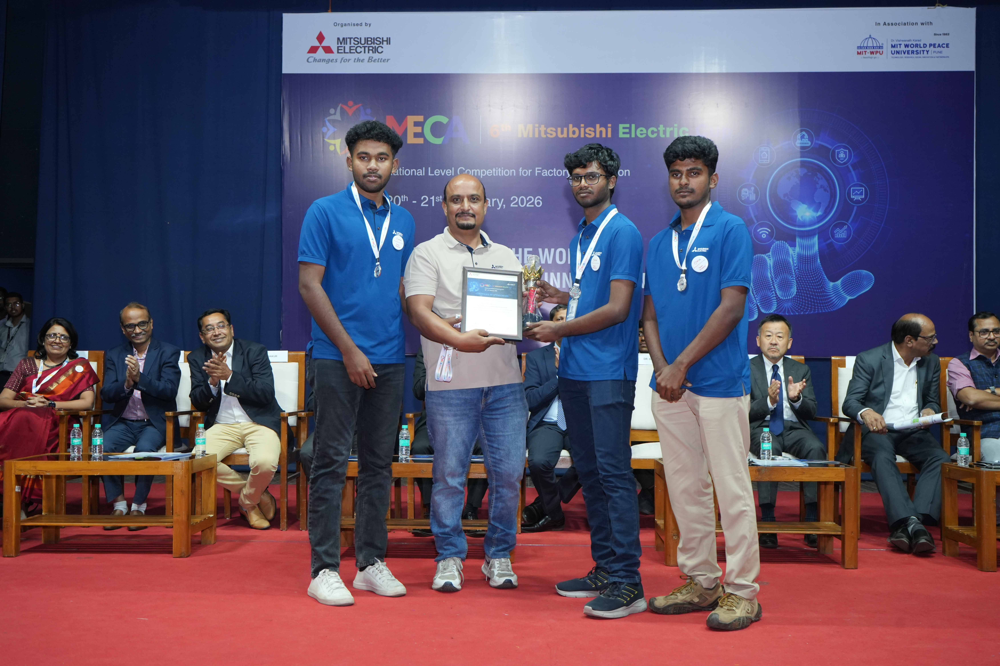
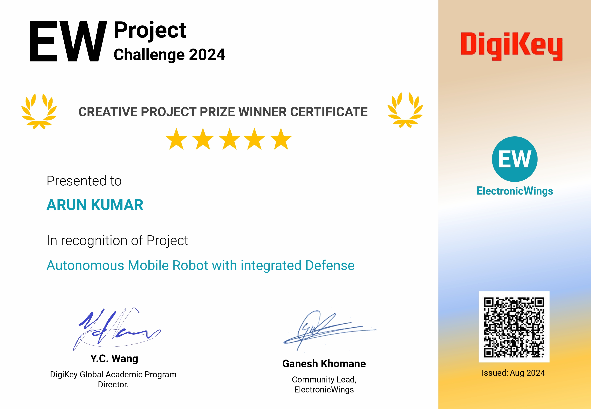
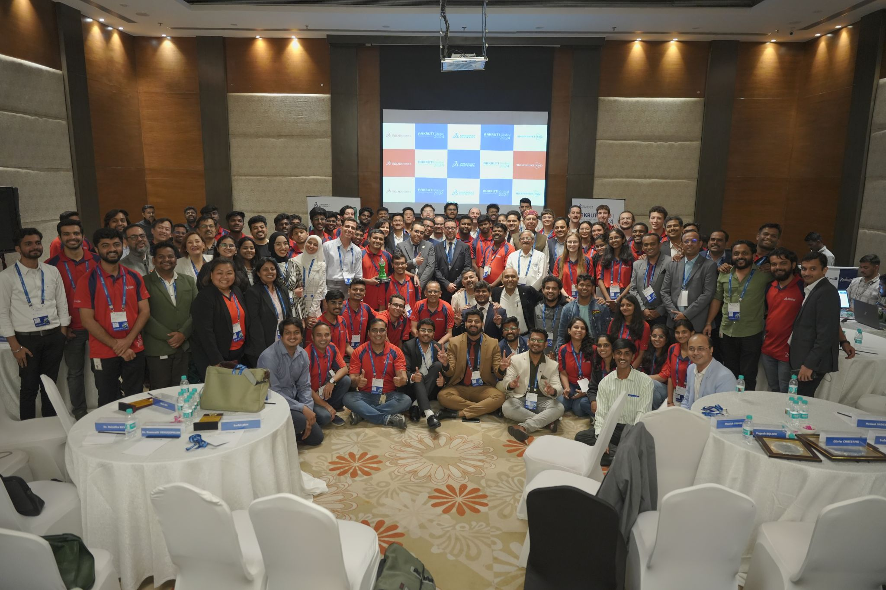
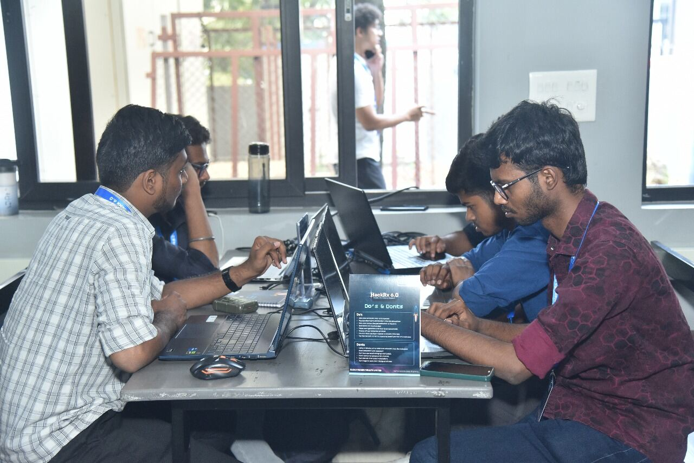

I teach metal to move and silicon to think.
Full Stack Robotics Engineer working the entire stack: CAD, ROS2, computer vision, deep learning, motion planning, and autonomy. I turn concepts into robots that navigate, perceive, and act in the real world: AMRs, AGVs, robotic arms, and beyond.

Developed LSTM and autoencoder-based models for time-series sensor data to detect equipment anomalies and predict potential failures.
Fabricated and developed an Autonomous Guided Vehicle (AGV) for shop-floor material handling, designed to transport tools and components between the tool room and CNC machines.
From first sketch to first motion, I build the machines that build the future.

Finished 7th in India at the Mitsubishi Electric Cup 2026. Team "Phoenix".
View details →
Top 5 in the Creative Project category for the "Autonomous Mobile Robot With Integrated Defense".
View details →
Finalist at the international Aakruti Global 2024 for the design of an autonomous surface water cleaning bot.
View details →
Reached the national finals of Bajaj Finserv HackRx 6.0 and placed in the top 10.
View details →Professional certifications and specialisations I've completed along the way.
Have a robot to build, a system to automate, or a role to fill? Let's talk.
Contact me ↗